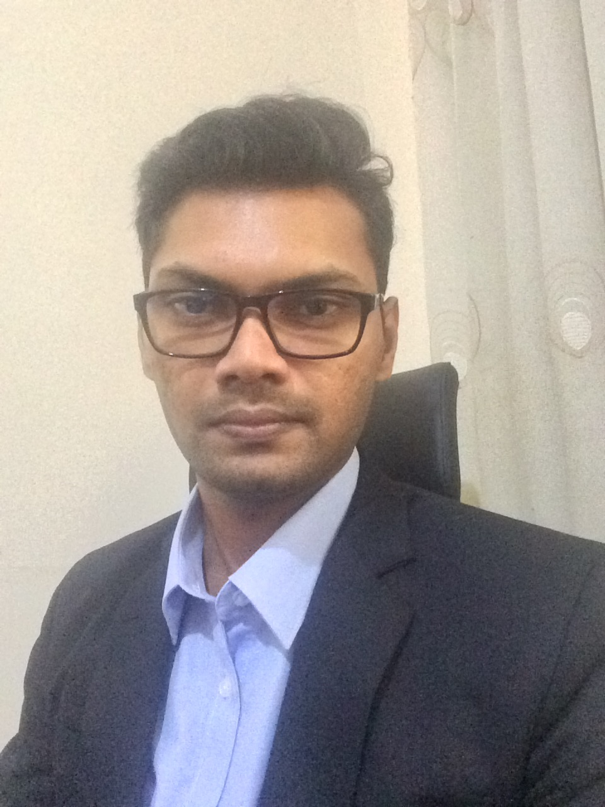

PhD Candidate · Australian National University
I am a PhD candidate in Computer Science at the Australian National University, specialising in branch-and-bound algorithms, combinatorial optimisation, and constraint programming. My doctoral research centres on the maximum common subgraph (MCS) problem — developing novel upper bounds, symmetry-breaking frameworks, and heuristic-exact hybrid methods.
I bring 3+ years of production software engineering experience at WSO2, where I built core components of the Ballerina programming language and the Siddhi stream processing engine. I am currently seeking postdoctoral opportunities in combinatorial optimisation and constraint programming.

Education
Research & Publications
Experience
Selected Projects
Awards & Recognition
Community & Service